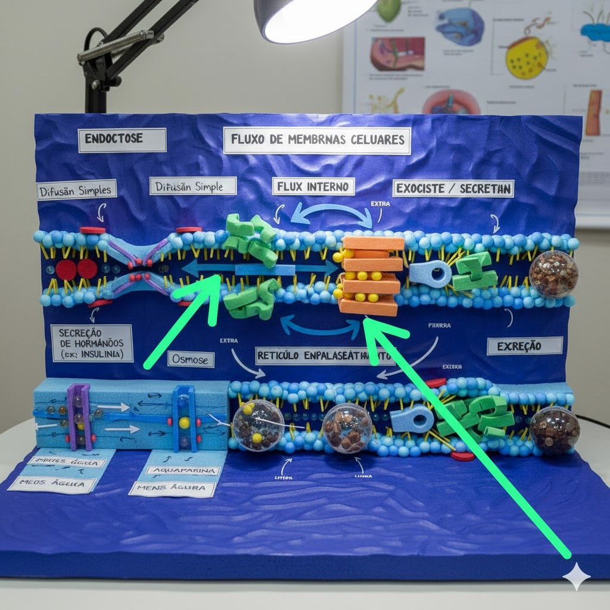

Exocitose, Secreção e Excreção
Como as células liberam substâncias e a diferença entre secreção e excreção.
Exocitose
Vesículas intracelulares se fundem com a membrana plasmática e liberam seu conteúdo para o espaço extracelular. Pode ser constitutiva (contínua) ou regulada (em resposta a sinal).
Secreção
Se refere à liberação de moléculas com função no organismo — hormônios, enzimas, muco. Em muitas células, a secreção ocorre por exocitose regulada.
Excreção
Remoção de resíduos e subprodutos do metabolismo. Nem toda excreção é por vesículas — alguns resíduos são transportados por canais ou bombas, mas também podem ser eliminados via vesículas.
Exemplos
- Insulina: sintetizada, empacotada e liberada por exocitose pelas células beta do pâncreas.
- Neurotransmissores: exocitose de vesículas sinápticas na fenda sináptica.
- Degradação intracelular: lisossomos drenam resíduos digeridos que podem ser excretados.
Resumo visual
Na biomaket: vesículas verdes representam vesículas secretoras prontas para se fundir com a membrana.
